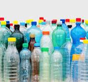
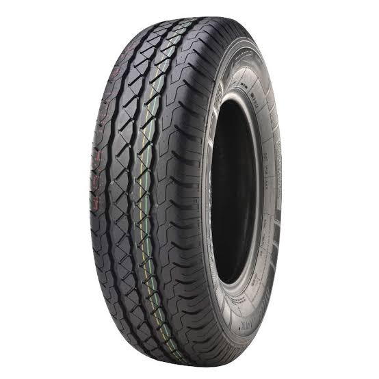
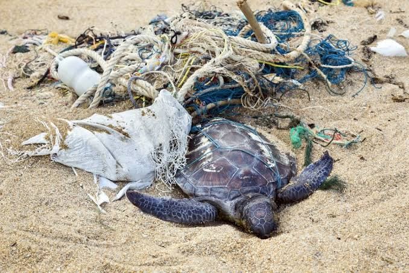

Diferença entre Polímeros naturais e sintéticos
Os polímeros sintéticos são fabricados pelo ser humano (produzidos em laboratório) e os polímeros naturais são encontrados na natureza (produzidos por células).
Tipos de polímeros
Polímeros de Adição
São os polímeros obtidos pela adição sucessiva de monômeros. Como exemplos temos os polissacarídeos, formados por monômeros de monossacarídeos e as proteínas, formadas por monômeros de aminoácidos.
Polímeros de Condensação
São os polímeros obtidos pela adição de dois monômeros diferentes com eliminação de uma molécula de água, álcool ou ácido, durante a polimerização.
Polímeros de Rearranjo
São os polímeros resultantes da reação entre monômeros que sofrem rearranjo nas suas estruturas químicas, durante a reação de polimerização.
Exemplos e suas utilizações

Polietileno (PE)
Utilização: embalagens plásticas, sacolas, garrafas e utensílios domésticos.
É leve, resistente e barato, por isso é amplamente usado no dia a dia.

Nylon
Utilização: roupas, cordas, pneus e peças industriais.
É forte, flexível e resistente ao desgaste, sendo muito usado na indústria têxtil e automotiva.
Impacto ambiental
Por conta da modernização das embalagens para produtos industrializados, começou a apresentar riscos ao meio ambiente. Mas, o grande problema está no descarte das embalagens plásticas, que muitas vezes é feito em locais inapropriados, com isso, a poluição causada pelos polímeros se tornou uma preocupação em nosso país e em todo o mundo. Ela pode ocasionar a poluição de rios e lagos e consequentes enchentes, e também do solo de um modo geral.
